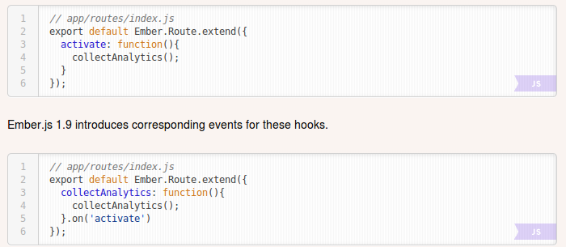
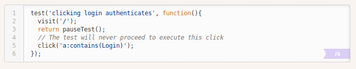
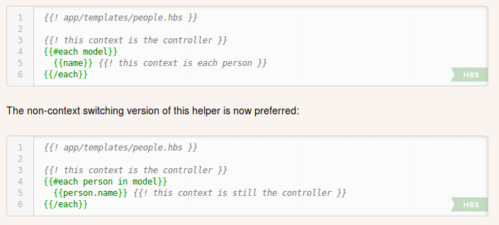
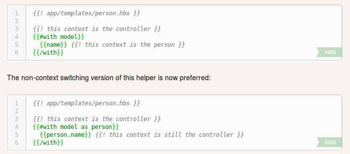
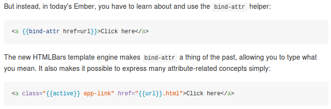
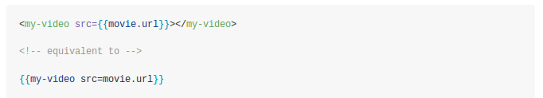
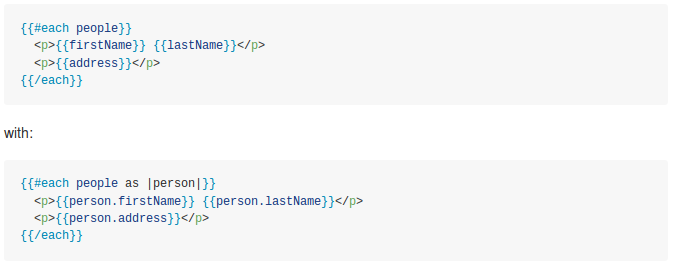
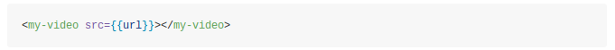
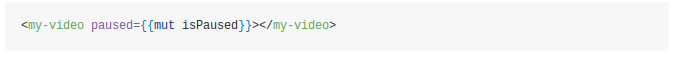

Welcome to meetup #6!
What has changed in Ember world?
Ember 1.9 (and 1.9.1) released
Upgrade to Handlebars from 1.x to 2.0 (update precompiled templates)
Hooks for activate and deactivate

pauseTest test helper

Deprecated context switching for {{#each}}

Deprecated context switching for {{#with}}

Various internal performance improvements
HTMLBars is landing in Ember 1.10 (expected January 23rd)!
Philosophy
- "Stability without stagnation": incremental changes, give people time with deprecations
- Simplification and intuify
Borrow data-flow idea from React.js: data flows in, events go out
Easier attribute binding

HTML-syntax for components

Remove context switching from templates

One-way binding will be default


Routeable components
When entering a route:
- Ember 1.x: creates controller, view, template
- Ember 2.0: creates component, template (old way will still work)